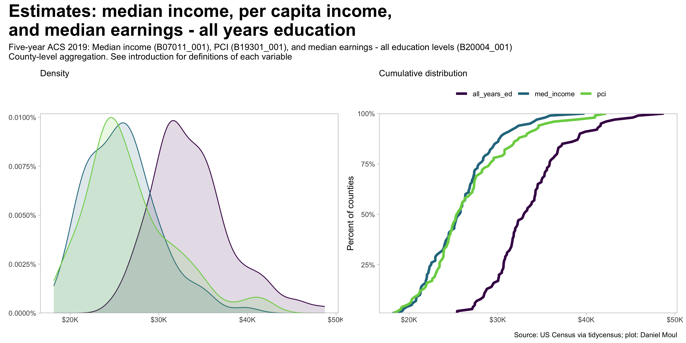
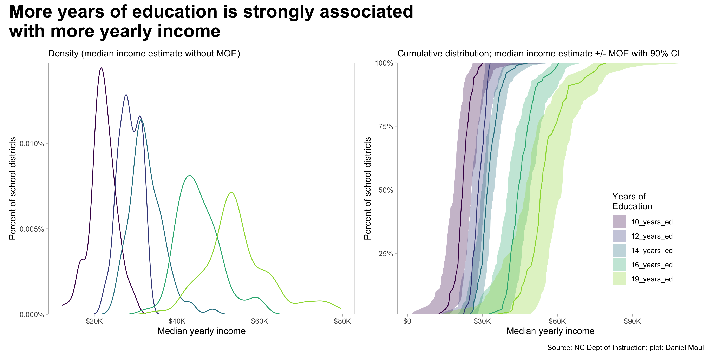
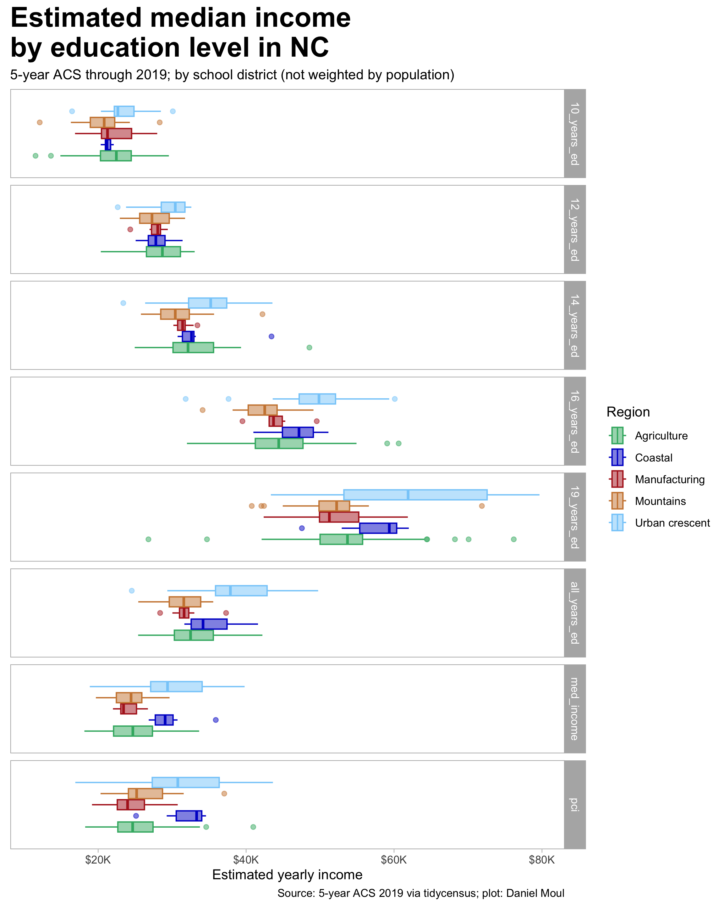
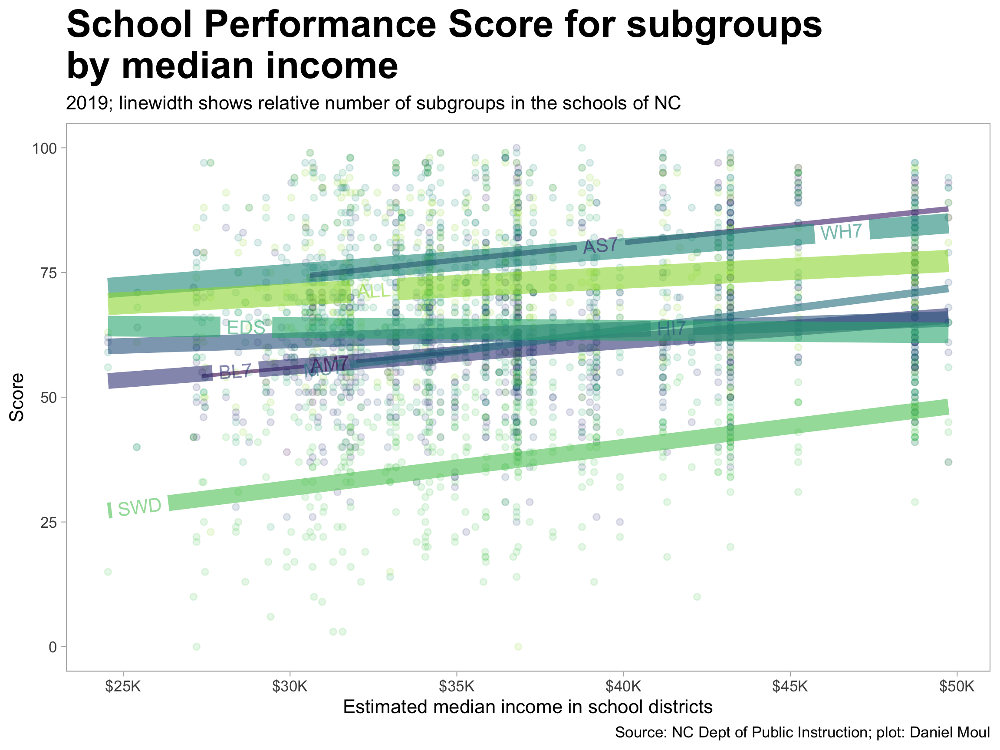
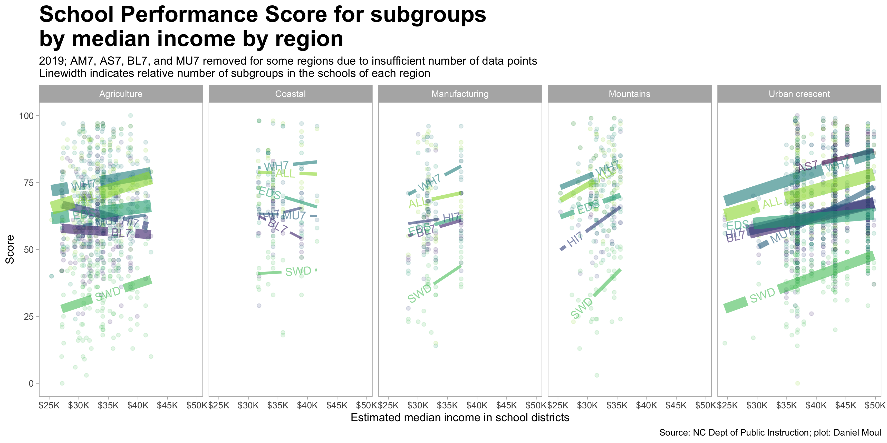
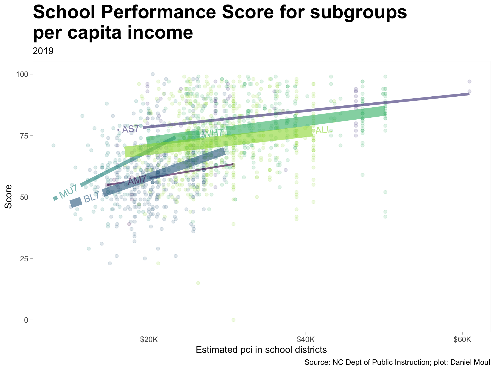
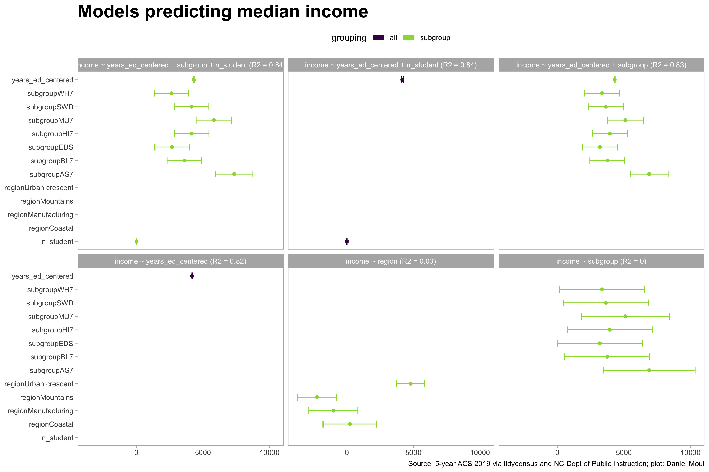
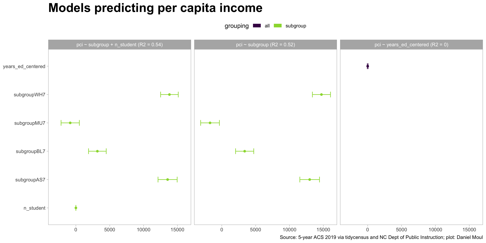
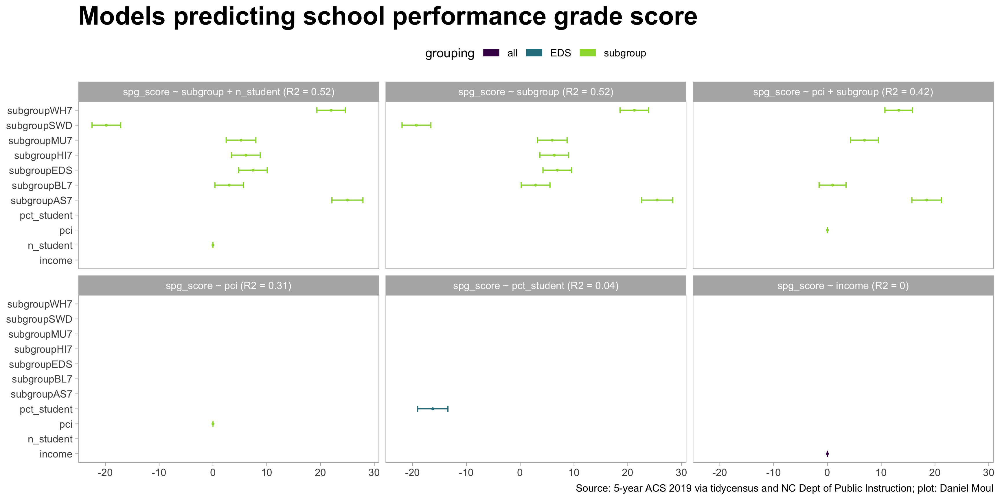
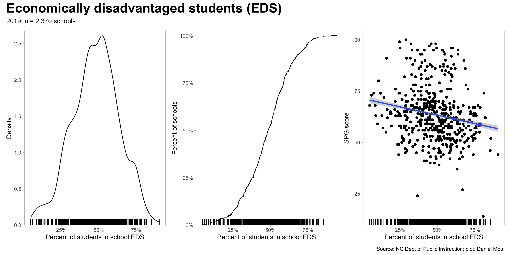

6 NC income and education
6.1 Introduction
Income is associated with school performance, however it doesn’t tell the whole story. There are significant disparities in educational outcomes for racial/ethnic subgroups and other “accountability groups” as noted in the chapter NC Education Section 5.5.1. Below I look at the associations of income, subgroup, and region with school performance: visually and numerically.
6.1.1 Income and earnings
The five-year ACS ending in 2019 includes a number of variables related to income and earnings. I use the following:
- B07011_001 (Median income in the past 12 months; universe: Population 15 years and over in the United States with income)
- B19301_001 (Per capita income in the past 12 months; universe: Total population). For per capita income by race I use “B19301A_001” through “B19301G_001”.
- B20004_001 and related variables (Median earnings in the past 12 months; universe: Population 25 years and over with earnings) by level of educational attainment (and all education levels)
All are estimates in 2019 dollars with geographical boundary of “county” or “school district (unified) as indicated”1
Data are estimates from the US Census five-year American Community Survey (ACS) results ending in 2019. At the time I am doing this analysis (Nov/Dec 2022), this was the latest reliable data available: detailed 2020 decennial census income data had not been released, and 2020 ACS results were less reliable than usual due to the COVID-19 pandemic. ACS estimates have much larger margins of error (MOE) than the decennial census. In small sub-populations MOEs can exceed estimated values. To simplify the presentation in this chapter I have not represented this uncertainty in most cases; instead I use the estimates as given. An exception is Figure 6.4.
Relevant ACS definitions of some measures of income2:
Income of Individuals – Income for individuals is obtained by summing the eight types of income for each person 15 years old and over. The characteristics of individuals are based on the time of interview even though the amounts are for the past 12 months.
Median Income – The median divides the income distribution into two equal parts: one-half of the cases falling below the median income and one-half above the median. For households and families, the median income is based on the distribution of the total number of households and families including those with no income. The median income for individuals is based on individuals 15 years old and over with income. Median income for households, families, and individuals is computed on the basis of a standard distribution.
Per Capita Income – Per capita income is the mean income computed for every man, woman, and child in a particular group including those living in group quarters. It is derived by dividing the aggregate income of a particular group by the total population in that group. (The aggregate used to calculate per capita income is rounded.
Median Earnings – The median divides the earnings distribution into two equal parts: one- half of the cases falling below the median and one-half above the median. Median earnings is restricted to individuals 16 years old and over with earnings and is computed on the basis of a standard distribution. Median earnings figures are calculated using linear interpolation.
And as noted at censusreporter.org3:
…in Census Bureau terminology, earnings are a subset of income. Specifically, earnings are wages or salary from a job, or income from being self-employed. Other kinds of income, not included in earnings, include social security payments, interest and dividends, income from property rental, pensions, public assistance, and child support.
6.2 Income and earnings (county aggregation)
There are distributions in the estimates of the income measures across the counties of NC.

All three measures point to higher income in the urban areas, with per capita income showing the largest differences.

And last in this section, a look at median earnings by educational attainment (county aggregation). Again we see (1) the strong association between higher levels of educational attainment and median earnings, and (2) the differences generally are largest in urban areas.

6.3 Years of education (school district aggregation)
To simplify plotting and linear regression, I converted categorical levels of educational attainment to numerical years of education in var_new as shown below. The XX_years_ed is my generalization of the average number of years required to achieve this level of education.
| description | var_new |
|---|---|
| Less than high school graduate | 10_years_ed |
| High school graduate (includes equivalency) | 12_years_ed |
| Some college or associate's degree | 14_years_ed |
| Bachelor's degree | 16_years_ed |
| Graduate or professional degree | 19_years_ed |
| Median earnings - all education levels (age 25 and over with earnings) | all_years_ed |
| Median income in the past 12 months (age 15 and over) | med_income |
| Per capita income in the past 12 months (whole population) | pci |


6.4 School performance score and median income (school district aggregation)
Is there a change in score associated with a change in median income of the people living the school district catchment area? Yes. As seen in Figure 6.6, scores increase as median income increases, however this is a smaller factor than racial/ethnic group, being economically disadvantaged, or being a student with a disability. Income is confounded by membership in racial/ethnic and economically disadvantaged subgroups, which are partially a proxy for income (which is not visible in this data set). And as we can see in Figure 6.7, region is a partial proxy for income too.
There are three clusters: (1) Students with disability (SWD) have a unique set of challenges, and their trend line is distinct from the other subgroups; (2) black (BU7), Native American (AM7), Hispanic (HI7), multiple races (MU7), and Economically disadvantaged (EDS); and (3) Asian (AS7) and white (WH7). These categories are overlapping: a student may belong to two or more subgroups.
The composite “All” subgroup is closest to the white (WH7) grouping, since in the majority of schools the white population is a large majority.
6.4.1 Score by median income (school district aggregation)

The patterns generally hold up when faceting by region.

6.4.2 Score by per capita income (school district aggregation)
The picture is different when looking at per capita income (PCI) instead of median income. In contrast to median income, (1) PCI varies by subgroup; and (2) there is less overlap in income ranges. Note that the PCI universe is not bounded by age, so subgroups that on average have larger families will have lower PCI. These differences in PCI by subgroup may be confounded by the mix of education levels in each group (data that would confirm this is not at hand).

The patterns generally hold up when faceting by region, however the trend lines do not; likely this is due to the narrower income bands of the subgroups.

6.5 Quantifying associations (school district aggregation)
Linear regression estimates quantify associations among variables. Can we find any terms in addition to years of education \(years\_ed\_centered\) that are strongly associated with median \(income\)? Yes.
A basic linear regression formula is of the form \[dependent\_variable \sim independent\_var_1 + independent\_var_2\]
Regression models that use \(subgroup\) as a term provide an estimate (for each subgroup) of the difference it makes after considering the reference subgroup, which does not show up in the list of regression estimates. In this case the reference subgroup is “AM7” American Indian and Native Alaska (aka “native_am”).
How much of the variance in the dependent variable can be explained by the independent variables? I use \(adjusted\ R^2\) as the metric to evaluate various linear regressions. Simpler explanations (i.e., fewer independent variables) are better than more complex ones and are less likely to overfit the data.
6.5.1 Summary: strongest associations
The strongest associations are the following:
- Median income (\(income\)) with years of education (\(years\_ed\_centered\)). \(R^2 = 82\%\)
- Per capita income (\(pci\)) with \(subgroup\). \(R^2 = 52\%\)
- School performance score (\(spg\_score\)) with \(subgroup\). \(R^2 = 52\%\)
The details are below.
6.5.2 Median income
The baseline model \(income \sim years\_ed\_centered\) explains 82% of the variance, and adding \(subgroup\) or \(n\_student\) doesn’t help much. Neither \(region\) or \(subgroup\) are useful. The bars show 90% confidence intervals.

6.5.3 Per capita income
\(pci\) has the potential to be interesting, since it varies by racial \(subgroup\). Do we see it in the numbers? Yes. The baseline model \(pci \sim subgroup\) explains 52% of the variance, and adding \(n\_student\) doesn’t help much. \(years\_ed\_centered\) is not useful.

6.5.4 School performance score
Can we find meaningful associations with school performance grade score? Yes, but like \(pci\), not as strongly as median \(income\).
A very simple model is again the best: \(spg\_score \sim subroup\) explains 52% of the variance.
Here we see the same three clusters of subgroups as noted in the plots in Section 6.4.
What about \(pci\) instead of median \(income\)? \(R^2\) is 0.31 and adding \(subgroup\) raises \(R^2\) to 0.42, which is less explanatory than using \(subgroup\) alone.

What if we look only at economically disadvantaged students (EDS)? There is a weak association: the higher the percentage of economically disadvantaged students in a school, the lower the \(spg\_score\). As seen in Models and model parameters the model \(spg\_score \sim pct\_student\) using the data_grouping EDS explains only 4% of the variance in \(spg\_score\)

6.5.5 Models and model parameters
The table below lists regression models and their key parameters. Some notes:
The mean years of education is 14.2 based on the informal mapping I created (see Years of education (school district aggregation)); \(years\_ed\_centered\) is the number of years +/- from this average. Thus when using \(years\_ed\_centered\) in a regression model, for example \(income \sim years\_ed\_centered\), the intercept indicates the income at the mean years of education.
Regression models that use \(subgroup\) as a term provide an estimate (for each subgroup) of the difference it makes after considering the reference subgroup, which does not show up in the list of regression estimates. In this case the reference subgroup is “AM7” American Indian and Native Alaska (aka “native_am”).
\(n\_student\) is the number of students in a school taking the end of course (EOC) exams. In addition to using it in some regressions, it provides a relative size of the schools and is helpful when calculating district-wide summaries using weighted means.
| Model summaries | |||||||||
| mod_id | data_grouping | term | estimate | p.value | conf.low1 | conf.high1 | adj.r.squared | sigma | nobs |
|---|---|---|---|---|---|---|---|---|---|
| income ~ years_ed_centered | |||||||||
| income ~ years_ed_centered + n_student | |||||||||
| income ~ region | |||||||||
| income ~ years_ed_centered + subgroup | |||||||||
| income ~ years_ed_centered + subgroup + n_student | |||||||||
| income ~ subgroup | |||||||||
| pci ~ years_ed_centered | |||||||||
| pci ~ subgroup | |||||||||
| pci ~ subgroup + n_student | |||||||||
| spg_score ~ income | |||||||||
| spg_score ~ subgroup | |||||||||
| spg_score ~ subgroup + n_student | |||||||||
| spg_score ~ pct_student | |||||||||
| spg_score ~ pci | |||||||||
| spg_score ~ pci + subgroup | |||||||||
| 1 Confidendence interval 90% | |||||||||
ACS 2019 table shells https://www.census.gov/programs-surveys/acs/technical-documentation/table-shells.2019.html#list-tab-8YLQAW43H3HSKKQHPT ↩︎
ACS 2019 subject definitions https://www2.census.gov/programs-surveys/acs/tech_docs/subject_definitions/2019_ACSSubjectDefinitions.pdf Pages 86-88. ↩︎